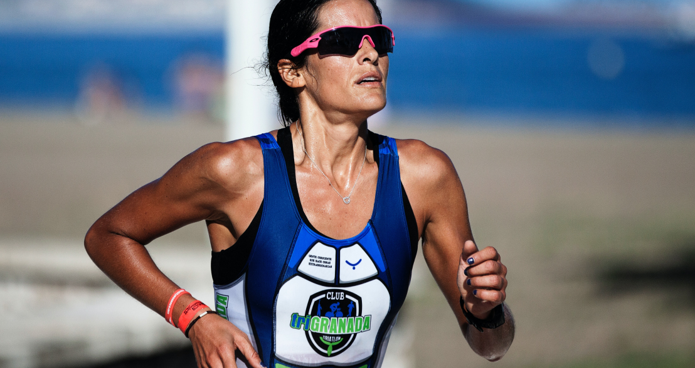

Афинский классический марафон 2021. Согласно легенде, греческий воин по имени Фидиппид (по другим источникам — Филиппид) в 490 году до нашей эры после битвы при Марафоне пробежал, не останавливаясь, от Марафона до Афин, чтобы возвестить о победе греков. Добежав до Афин, он успел крикнуть «Радуйтесь, афиняне, мы победили!» и упал замертво. Эта легенда не подтверждается документальными источниками, но проверить ее можете Вы, пробежав 14 ноября 2021 года классическую трассу от Марафона до Афин. Греция уже сейчас открывает въезд для россиян.
- Соревнования

- Любительский спорт
RUN ASICS
KRASNODAR
Победители взрослого забега среди мужчин и женщин в этом году получат по 25 000 руб. Бегуны, занявшие 2-е место, - 15 000 руб., за 3-е место вручается приз в размере 10 000 руб. Участники и участницы, занявшие с 3 по 6 место, получат сертификаты на кроссовки ASICS.ИТОГИ
МАРАФОНА
"ЭРГО БЕЛЫЕ
НОЧИ"
3 июля 2016 года, при поддержке компании ASICS состоялся XXVII марафон «ЭРГО Белые Ночи». В этом году гонку пробежали рекордное количество бегунов – 7 319 человек: 2 868 человек преодолели марафонскую дистанцию, 4 451 – 10 километров. Партнер марафона – крупнейший в мире производителем спортивной одежды и обуви ASICS – предоставил всем участникам соревнования футболки. - О людях
- Экипировка
- тренировки